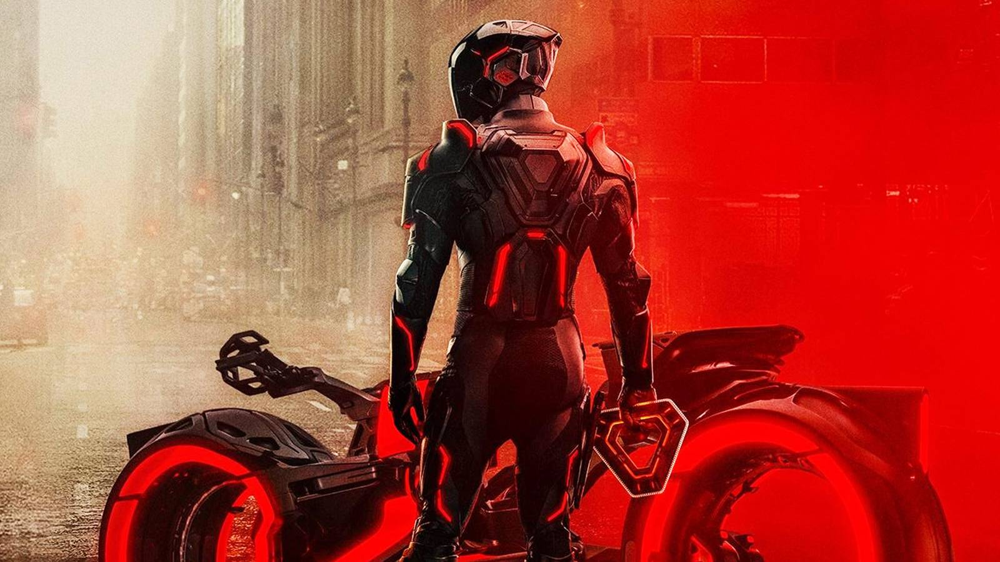

Nine Inch Nails' TRON: Ares Soundtrack: A Synth-Heavy Homage To Daft Punk
{kind=link}

The TRON: Ares soundtrack, composed by industrial-rock gods Nine Inch Nails, arrives in full as part of the lead-up to the film’s release on October 9. When the band hit the road this year for their “Peel It Back” tour, it lacked an accompanying new album for fans to dig into, though this is now officially rectified with TRON: Ares (Official Movie Soundtrack).
Unlock Personalized Content &
Exclusive Features For Free
- Engage in discussions in Threads
- Follow and Like top authors, topics, and trends
- Browse with fewer ads across the site
- Personalize your profile to showcase your activity
- Get a content feed tailored to your interests
By creating an account, you agree to our Terms of Use and Privacy Policy. You also agree to receive our newsletters; you can unsubscribe any time.
Log in or Create an Account For Free
Create an account
Please provide your email address to finish creating your account.
*Required: 8 chars, 1 capital letter, 1 number
By creating an account, you agree to our Terms of Use and Privacy Policy. You also agree to receive our newsletters; you can unsubscribe any time.
It’s an album that is often reminiscent of the film scores that core members, Trent Reznor and Atticus Ross, have released in abundance since they composed the acclaimed soundtrack for David Fincher’s The Social Network back in 2010 (which won an Academy Award for Best Original Score).
Equally though, TRON: Ares represents a legit new album for NIN. It's the band’s first full-length album to feature the vocals of Trent Reznor for more than a decade, since the release of Hesitation Marks in 2013 (notwithstanding recent releases in the band’s ambient instrumental Ghosts anthology or their Bad Witch trilogy of mini-EPs between 2016 and 2018).
Trent Reznor Is Alive As You Need Him To Be
Scoring an entry in the Tron franchise is big boots to step into, since it was the iconic Daft Punk who scored the franchise’s previous entry, TRON: Legacy, in 2010. The seminal French house duo (now sadly defunct) delivered an electro masterpiece with their TRON: Legacy soundtrack, an EDM milestone, and arguably one of the standout film scores from the past 20 years.
So it is fitting that Reznor and Ross are treating the soundtrack like the special occasion that it deserves. TRON: Ares represents a rare occasion when a soundtrack is released under the Nine Inch Nails moniker (it’s the first time Reznor and Ross have done so since they first teamed up to score films together in 2010).
This is a modal window.
TRON: Ares brings more of a dark, dystopian vibe than its predecessor, which makes Nine Inch Nails an inspired choice to score the new film. It's not all industrial-themed darkness, though, as Reznor and Ross lean heavily into the Daft Punk brand of synth-heavy electro on the album. They amp up the energetic ‘80s synths while dialing down their trademark industrial noise (just a little).
“As Alive As You Need Me To Be” is the lead single from TRON: Ares, and it perfectly sets the tone for the album. It is one of a handful of the 24 tracks on the album that feature Reznor belting it out on the mic like the seasoned rocker that he is. Except overall, production-wise, it’s a different story from your typical Nine Inch Nails album.
Witnessed in the album's dramatic Reznor-led finale “Shadow Over Me,” plus the otherwise instrumental soundscapes that Reznor and Ross crafted for TRON: Ares, the vibe is crunchy electro driven by stomping four-four beats, the sort of club-ready material you’d expect from artists like Boys Noize (who opened for Nine Inch Nails on their “Peel It Back” tour, as it happens).
Soundtracking The Next Era Of TRON
TRON: Ares is a different kind of soundtrack for a different kind of TRON film. ScreenRant found this out during a visit to the set of TRON: Ares in Vancouver in the midst of the film's production, where producer Justin Springer himself confirmed during a chat that the film veers off in a fresh creative direction.
“It’s a new story. It’s not a sequel to Legacy. It’s a new Tron story that does exist within the same mythology… nothing that was in the story of Legacy or in the original Tron film feels left behind so much or overwritten.”
Director Joachim Rønning spoke further of this darker turn for the franchise, which he says nonetheless remains distinct for its optimistic take on technology and its relationship with humanity. After all, the world of TRON represents the earliest visualization of a metaverse.
“It’s probably the darkest franchise for Disney. But I am also infusing it with humanity… this movie is very much about what it takes to be human,” Rønning told ScreenRant.
"...I think it's also like we are in this era of artificial general intelligence and super sophisticated 3d printing and synthetic biology in a way that will change the way we exist in our world, in terms of how we communicate, who we have relationships with, how we fight our wars, like that's really in the zeitgeist of what's happening right now."